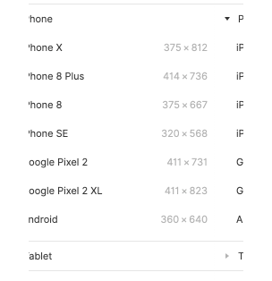
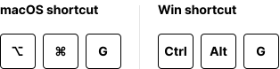

1
Frames
Frames in Figma are what you may think of as artboards in other design tools. Frames are a foundational element for your designs that act as a top-level container for most things you create in Figma. There are a few different ways to create frames in Figma:
Custom sizes
Create custom sized frames by selecting the frame tool and click and drag your cursor to the desired size.
macOS and Win shortcut

Preset sizes
Create frames with preset sizes, e.g. iPhone X, by selecting the preset in the Properties panel on the right-hand side.

Existing element.
Create frames from existing elements on the canvas by right-clicking and selecting Frame Selection.
